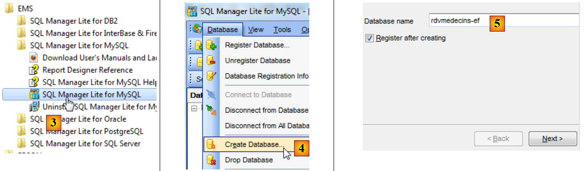
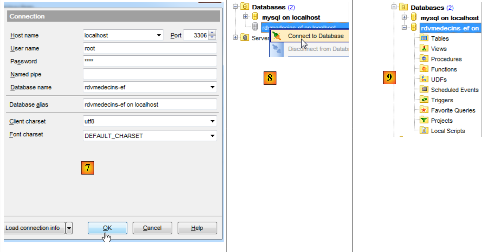
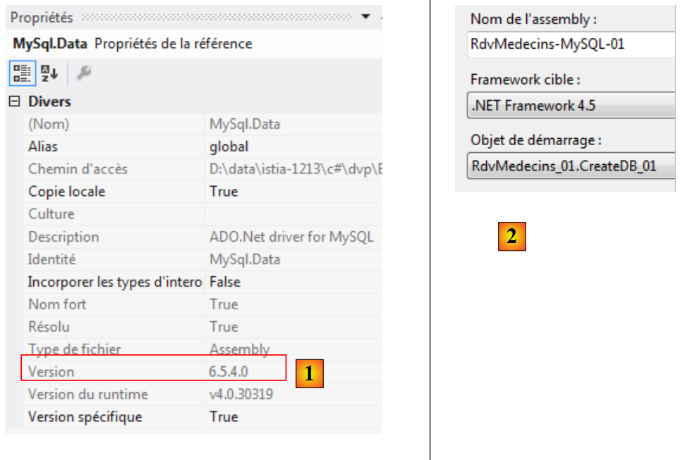
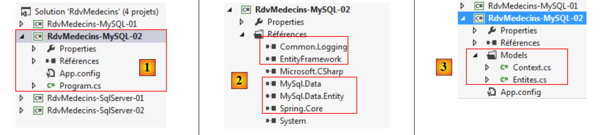
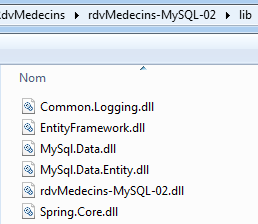

4. Case Study with MySQL 5.5.28
4.1. Installing the tools
The tools to be installed are as follows:
- the DBMS: [http://dev.mysql.com/downloads/];
- an administration tool: EMS SQL Manager for MySQL Freeware [http://www.sqlmanager.net/fr/products/mysql/manager/download].
In the following examples, the root user has the password root.
Let’s start MySQL5. Here, we do this from the Windows Services window [1]. In [2], the DBMS is running.
 |
We now launch the [SQL Manager Lite for MySQL] tool, which we will use to administer the DBMS [3].
 |
- In [4], we create a new database;
- in [5], we specify the database name;
 |
- in [5], we log in as root / root;
- In [6], we validate the SQL statement to be executed;
 |
- In [7], the database has been created. It must now be registered in [EMS Manager]. The information is correct. Click [OK];
- In [8], we connect to it;
- In [9], [EMS Manager] displays the database, which is currently empty.
We will now connect a VS 2012 project to this database.
4.2. Creating the database from the entities
We create the VS 2012 console project [RdvMedecins-MySQL-01] [1] below:
 |
- In [2], add references to the project via NuGet;
 |
- In [3], we add the EF 5 reference;
- in [4], it is now in the references;
 |
- in [5], we repeat the process to add [MySQL.Data.Entities], which is an ADO.NET connector for Entity Framework. To find the package, we can use the search box [6];
- in [7], two references appear: [MySQL.Data.Entities] and [MySQL.Data], the latter being a dependency of the former.
Now, we will build the [RdvMedecins-MySQL-01] project based on the [RdvMedecins-SqlServer-01] project.
 |
- In [1], copy the selected items;
- In [2], paste them into the [RdvMedecins-MySQL-01] project;
- in [3], because there are multiple programs with a [Main] method, we need to specify the startup project.
At this point, the project should build successfully. Now, we will modify the [App.config] configuration file, which configures the database connection string and the DbProviderFactory. It becomes the following:
<?xml version="1.0" encoding="utf-8"?>
<configuration>
<configSections>
<!-- For more information on Entity Framework configuration, visit http://go.microsoft.com/fwlink/?LinkID=237468 -->
<section name="entityFramework" type="System.Data.Entity.Internal.ConfigFile.EntityFrameworkSection, EntityFramework, Version=5.0.0.0, Culture=neutral, PublicKeyToken=b77a5c561934e089" requirePermission="false" />
</configSections>
<startup>
<supportedRuntime version="v4.0" sku=".NETFramework,Version=v4.5" />
</startup>
<entityFramework>
<defaultConnectionFactory type="System.Data.Entity.Infrastructure.SqlConnectionFactory, EntityFramework" />
</entityFramework>
<!-- connection string -->
<connectionStrings>
<add name="myContext"
connectionString="Server=localhost;Database=rdvmedecins-ef;Uid=root;Pwd=root;"
providerName="MySql.Data.MySqlClient" />
</connectionStrings>
<!-- the provider factory -->
<system.data>
<DbProviderFactories>
<add name="MySQL Data Provider" invariant="MySql.Data.MySqlClient" description=".NET Framework Data Provider for MySQL"
type="MySql.Data.MySqlClient.MySqlClientFactory, MySql.Data, Version=6.5.4.0, Culture=neutral, PublicKeyToken=C5687FC88969C44D"
/>
</DbProviderFactories>
</system.data>
</configuration>
- line 17: the connection string to the MySQL database [rdvmedecins-ef] that we created;
- line 24: the version must match that of the [MySql.Data] reference in the project [1]:
 |
There is also some configuration in the [Entities.cs] file where we specify the names of the tables and the schema to which they belong. This may vary depending on the DBMS. This is the case here, where there will be no schema. The [Entities.cs] file changes as follows:
[Table("MEDECINS")]
public class Doctor : Person
{...}
[Table("CLIENTS")]
public class Client : Person
{...}
[Table("SLOTS")]
public class Creneau
{...}
[Table("RVS")]
public class Rv
{...}
Let's run the [CreateDB_01] [2] program. We get the following exception:
Unhandled exception: System.Data.MetadataException: The specified schema is invalid. Errors:
(11,6): error 0040: The rowversion type is not qualified with a namespace or alias. Only primitive types can be used without qualification.
(23,6): error 0040: The rowversion type is not qualified with a namespace or alias. Only primitive types can be used without qualification.
(33,6): error 0040: The rowversion type is not qualified with a namespace or alias. Only primitive types can be used without qualification.
(43,6): error 0040: The rowversion type is not qualified with a namespace or alias. Only primitive types can be used without qualification.
to System.Data.Metadata.Edm.StoreItemCollection.Loader.ThrowOnNonWarningErrors
()
....
at RdvMedecins_01.CreateDB_01.Main(String[] args) in d:\data\istia-1213\c#\d
vp\Entity Framework\RdvMedecins\RdvMedecins-MySQL-01\CreateDB_01.cs:line 15
The same error appears four times (lines 2–5). The rowversion type suggests the field with the [Timestamp] annotation in the entities:
[Column("TIMESTAMP")]
[Timestamp]
public byte[] Timestamp { get; set; }
We decide to replace these three lines with the following:
[ConcurrencyCheck]
[Column("VERSIONING")]
public DateTime? Versioning { get; set; }
We change the column type from byte[] to DateTime?. We do this because MySQL has a [TIMESTAMP] type that represents a date/time, and a column of this type is automatically updated by MySQL every time the row is updated. This will allow us to manage concurrent access.
The [Timestamp] annotation can only be applied to a column of type byte[]. We replace it with the [ConcurrencyCheck] annotation. Both of these annotations handle concurrent access. We do this for all four entities and then rerun the application. We then get the following error:
Unhandled exception: MySql.Data.MySqlClient.MySqlException: You have an error in your SQL syntax; check the manual that corresponds to your MySQL server version for the right syntax to use near 'NOT NULL, `ProductVersion` mediumtext NOT NULL);
ALTER TABLE `__MigrationH' at line 5
at MySql.Data.MySqlClient.MySqlStream.ReadPacket()
to MySql.Data.MySqlClient.NativeDriver.GetResult(Int32& affectedRow, Int32& insertedId)
...
to RdvMedecins_01.CreateDB_01.Main(String[] args) in d:\data\istia-1213\c#\d
vp\Entity Framework\RdvMedecins\RdvMedecins-MySQL-01\CreateDB_01.cs:line 15
Line 1 indicates a syntax error in the SQL executed by MySQL. Since this was not generated by us but by the MySQL ADO.NET provider, we cannot correct this issue. However, we can see that tables have been created [1] below:
 |
- in [2], we see the structure of the [clients] table [3].
There are several changes to make to the generated database:
- the data type of the [VERSIONING] column is incorrect. It must be set to the MySQL [TIMESTAMP] type;
- Recall that the [rvs] table has a unique constraint. It was not created during this generation;
- The SQL Server ADO.NET connector generated foreign keys with the ON DELETE CASCADE clause. The MySQL ADO.NET connector did not do this.
As we did with SQL Server, we must therefore modify the generated database. We do not show how to make the modifications. We simply provide the script for creating the database:
# SQL Manager Lite for MySQL 5.3.0.2
# ---------------------------------------
# Host : localhost
# Port : 3306
# Database: rdvmedecins-ef
/*!40101 SET @OLD_CHARACTER_SET_CLIENT=@@CHARACTER_SET_CLIENT */;
/*!40101 SET @OLD_CHARACTER_SET_RESULTS=@@CHARACTER_SET_RESULTS */;
/*!40101 SET @OLD_COLLATION_CONNECTION=@@COLLATION_CONNECTION */;
/*!40101 SET NAMES utf8 */;
SET FOREIGN_KEY_CHECKS=0;
USE `rdvmedecins-ef`;
#
# Structure for the `clients` table:
#
CREATE TABLE `clients` (
`ID` INTEGER(11) NOT NULL AUTO_INCREMENT,
`LAST_NAME` VARCHAR(30) COLLATE utf8_general_ci NOT NULL,
`LAST_NAME` VARCHAR(30) COLLATE utf8_general_ci NOT NULL,
`TITLE` VARCHAR(5) COLLATE utf8_general_ci NOT NULL,
`VERSIONING` TIMESTAMP NOT NULL ON UPDATE CURRENT_TIMESTAMP DEFAULT CURRENT_TIMESTAMP,
PRIMARY KEY USING BTREE (`ID`) COMMENT ''
)ENGINE=InnoDB
AUTO_INCREMENT=96 AVG_ROW_LENGTH=4096 CHARACTER SET 'utf8' COLLATE 'utf8_general_ci'
COMMENT=''
;
#
# Structure for the `medecins` table:
#
CREATE TABLE `doctors` (
`ID` INTEGER(11) NOT NULL AUTO_INCREMENT,
`LAST_NAME` VARCHAR(30) COLLATE utf8_general_ci NOT NULL,
`LAST_NAME` VARCHAR(30) COLLATE utf8_general_ci NOT NULL,
`TITLE` VARCHAR(5) COLLATE utf8_general_ci NOT NULL,
`VERSIONING` TIMESTAMP NOT NULL ON UPDATE CURRENT_TIMESTAMP DEFAULT CURRENT_TIMESTAMP,
PRIMARY KEY USING BTREE (`ID`) COMMENT ''
)ENGINE=InnoDB
AUTO_INCREMENT=56 AVG_ROW_LENGTH=4096 CHARACTER SET 'utf8' COLLATE 'utf8_general_ci'
COMMENT=''
;
#
# Structure for the `creneaux` table:
#
CREATE TABLE `slots` (
`ID` INTEGER(11) NOT NULL AUTO_INCREMENT,
`START_TIME` INTEGER(11) NOT NULL,
`MDEBUT` INTEGER(11) NOT NULL,
`END_TIME` INTEGER(11) NOT NULL,
`MEND` INTEGER(11) NOT NULL,
`DOCTOR_ID` INTEGER(11) NOT NULL,
`VERSIONING` TIMESTAMP NOT NULL ON UPDATE CURRENT_TIMESTAMP DEFAULT CURRENT_TIMESTAMP,
PRIMARY KEY USING BTREE (`ID`) COMMENT '',
INDEX `MEDECIN_ID` USING BTREE (`MEDECIN_ID`) COMMENT '',
CONSTRAINT `creneaux_ibfk_1` FOREIGN KEY (`MEDECIN_ID`) REFERENCES `medecins` (`ID`) ON DELETE CASCADE ON UPDATE NO ACTION
)ENGINE=InnoDB
AUTO_INCREMENT=472 AVG_ROW_LENGTH=455 CHARACTER SET 'utf8' COLLATE 'utf8_general_ci'
COMMENT=''
;
#
# Structure for the `rvs` table:
#
CREATE TABLE `rvs` (
`ID` INTEGER(11) NOT NULL AUTO_INCREMENT,
`DAY` DATE NOT NULL,
`SLOT_ID` INTEGER(11) NOT NULL,
`CLIENT_ID` INTEGER(11) NOT NULL,
`VERSIONING` TIMESTAMP NOT NULL ON UPDATE CURRENT_TIMESTAMP DEFAULT CURRENT_TIMESTAMP,
PRIMARY KEY USING BTREE (`ID`) COMMENT '',
UNIQUE INDEX `SLOT_ID_DAY` USING BTREE (`DAY`, `SLOT_ID`) COMMENT '',
INDEX `SLOT_ID` USING BTREE (`SLOT_ID`) COMMENT '',
INDEX `CLIENT_ID` USING BTREE (`CLIENT_ID`) COMMENT '',
CONSTRAINT `rvs_ibfk_2` FOREIGN KEY (`CLIENT_ID`) REFERENCES `clients` (`ID`) ON DELETE CASCADE ON UPDATE NO ACTION,
CONSTRAINT `rvs_ibfk_1` FOREIGN KEY (`CRENEAU_ID`) REFERENCES `creneaux` (`ID`) ON DELETE CASCADE ON UPDATE NO ACTION
)ENGINE=InnoDB
AUTO_INCREMENT=28 AVG_ROW_LENGTH=16384 CHARACTER SET 'utf8' COLLATE 'utf8_general_ci'
COMMENT=''
;
- lines 22, 38, 54, 74: the primary keys (ID) of the tables are of type AUTO_INCREMENT and are therefore generated by MySQL;
- lines 26, 42, 60, 78: the VERSIONING column is of type TIMESTAMP and is updated during an INSERT or UPDATE;
- line 63: the foreign key from the [slots] table to the [doctors] table with the ON DELETE CASCADE clause;
- line 80: the uniqueness constraint on the [rvs] table;
- line 83: the foreign key from the [rvs] table to the [slots] table with the ON DELETE CASCADE clause;
- line 84: the foreign key from the [rvs] table to the [clients] table with the ON DELETE CASCADE clause;
The script for generating the tables in the MySQL database [rvmedecins-ef] has been placed in the folder [RdvMedecins / databases / mysql]. The reader can load and run it to create the tables.
Once this is done, the various programs in the project can be run. They produce the same results as with SQL Server, except for the [ModifyDetachedEntities] program, which crashes. To understand why, we can look at the output of the [ModifyAttachedEntities] program:
- Lines 1-2: a client before the context is saved;
- lines 3-4: the client after saving. It has a primary key but no value for its [Versioning] field, whereas SQL Server updated the entity's [Timestamp] field.
Now let's examine the code for the [ModifyDetachedEntities] program that crashes:
using System;
...
namespace RdvMedecins_01
{
class ModifyDetachedEntities
{
static void Main(string[] args)
{
Client client1;
// clear the current database
Erase();
// add a client
using (var context = new RdvMedecinsContext())
{
// create client
client1 = new Client { Title = "x", LastName = "x", FirstName = "x" };
// Add the client to the context
context.Clients.Add(client1);
// Save the context
context.SaveChanges();
}
// basic display
Dump("1-----------------------------");
// client1 is not in the context - modify it
client1.Name = "y";
// modifying an entity outside the context
using (var context = new RdvMedecinsContext())
{
// here, we have a new empty context
// we put client1 into the context in a modified state
context.Entry(client1).State = EntityState.Modified;
// we save the context
context.SaveChanges();
}
...
}
static void Erase()
{
...
}
static void Dump(string str)
{
...
}
}
}
- Line 20: A client is saved. It now has its primary key, but based on its version;
- line 33: a modification is made with client1. It fails because it does not have the version stored in the database.
We solve the problem by inserting the following code between lines 25 and 26:
// retrieve client1 to get its version
using (var context = new RdvMedecinsContext())
{
// client2 will be in the context
Client client2 = context.Clients.Find(client1.Id);
// Set client1's version to that of client2
client1.Versioning = client2.Versioning;
}
Now, the [client1] entity has the same version as in the database and can therefore be used to update the row in the database.
4.3. Multi-layer architecture based on EF 5
Let’s return to the case study described in section 2.
 |
We will start by building the [DAO] data access layer. To do this, we create the VS 2012 console project [RdvMedecins-MySQL-02] [1]:
 |
- in [2], the references [Common.Logging, EntityFramework, MySql.Data, MySql.Data.Entity, Spring.Core] are added using NuGet;
- in [3], the [Models] folder is copied from the [RdvMedecins-MySQL-01] project;
 |
- in [4], the folders [Dao, Exception, Tests] and the file [App.config] are copied from the [RdvMedecins-SqlServer-02] project;
- in [5], the [Program.cs] file has been deleted;
- in [6], the project is configured to run the [DAO] layer test program.
In the [App.config] file, the SQL Server database information is replaced with that of the MySQL database. This information can be found in the [App.config] file of the [RdvMedecins-MySQL-01] project:
<!-- connection string -->
<connectionStrings>
<add name="myContext"
connectionString="Server=localhost;Database=rdvmedecins-ef;Uid=root;Pwd=root;"
providerName="MySql.Data.MySqlClient" />
</connectionStrings>
<!-- the factory provider -->
<system.data>
<DbProviderFactories>
<add name="MySQL Data Provider" invariant="MySql.Data.MySqlClient" description=".NET Framework Data Provider for MySQL"
type="MySql.Data.MySqlClient.MySqlClientFactory, MySql.Data, Version=6.5.4.0, Culture=neutral, PublicKeyToken=C5687FC88969C44D"
/>
</DbProviderFactories>
</system.data>
The objects managed by Spring also change. Currently we have:
<!-- Spring configuration -->
<spring>
<context>
<resource uri="config://spring/objects" />
</context>
<objects xmlns="http://www.springframework.net">
<object id="rdvmedecinsDao" type="RdvMedecins.Dao.Dao,RdvMedecins-SqlServer-02" />
</objects>
</spring>
Line 7 references the assembly for the [RdvMedecins-SqlServer-02] project. The assembly is now [RdvMedecins-MySQL-02].
With that done, we are ready to run the [DAO] layer test. First, we must ensure the database is populated (using the [Fill] program from the [RdvMedecins-MySQL-01] project). The test program runs successfully.
We create the project's DLL as we did for the [RdvMedecins-SqlServer-02] project, and we place all the project's DLLs in a [lib] folder created within [RdvMedecins-MySQL-02]. These will serve as references for the [RdvMedecins-MySQL-03] web project, which we will cover next.
 |
We are now ready to build the [ASP.NET] layer of our application:
 |
We will start with the [RdvMedecins-SqlServer-03] project. We duplicate this project’s folder into [RdvMedecins-MySQL-03] [1]:
 |
- in [2], using VS 2012 Express for the Web, we open the solution in the [RdvMedecins-MySQL-03] folder;
- In [3], we change both the solution name and the project name;
 |
- in [4], the project's current references;
- in [5], we delete them;
- in [6], to replace them with references to the DLLs we just stored in a [lib] folder within the [RdvMedecins-MySQL-02] project.
All that remains is to modify the [Web.config] file. We replace its current content with the content of the [App.config] file from the [RdvMedecins-MySQL-02] project. Once this is done, we run the web project. It works.
4.4. Conclusion
Let’s summarize what was done to switch from the SQL Server DBMS to the MySQL DBMS:
- The field used to manage concurrent access to entities was changed. Its SQL Server version was:
[Column("TIMESTAMP")]
[Timestamp]
public byte[] Timestamp { get; set; }
It has become:
[ConcurrencyCheck]
[Column("VERSIONING")]
public DateTime? Versioning { get; set; }
with MySQL;
- the [Table] annotations that link an entity to a table have been changed;
- the database connection string and the [DbProviderFactory] have been modified in the [App.config] and [Web.config] configuration files;
- After saving to the database, an SQL Server entity had both its primary key and its timestamp. With MySQL, it only had its primary key. This required a code change.
In the end, there were relatively few changes, but we still had to review the code. We are repeating the same process for three other DBMSs:
- Oracle Database Express Edition 11g Release 2;
- The PostgreSQL 9.2.1 DBMS;
- The Firebird 2.1 DBMS.